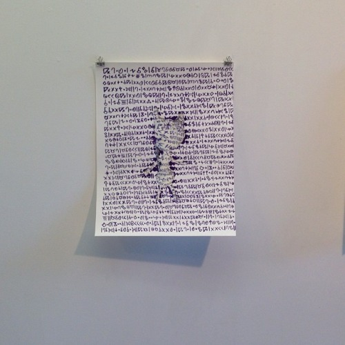

For the Recession Art Print Exchange, I proposed doing a mixed media print, based on a character in a larger interactive work that I have been developing. The print consists of a screen print, scanned and used as the texture for a 3D character, then digitally printed with the screen print then printed on top. Read more about the process on my blog.
